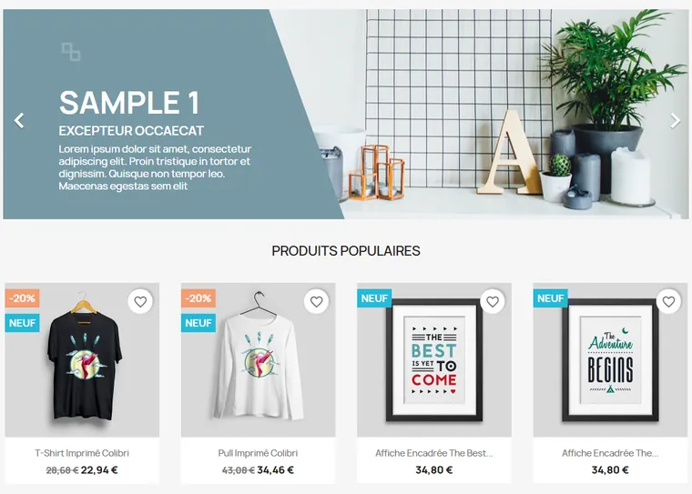
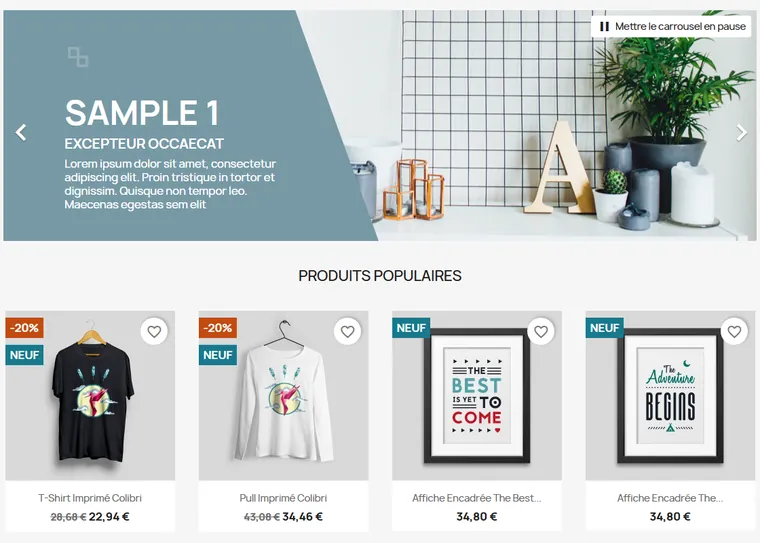
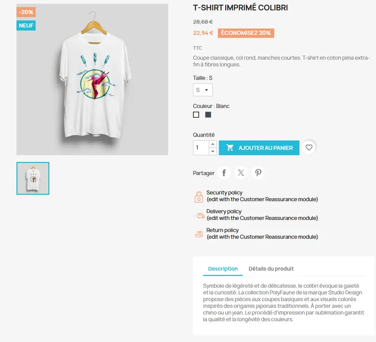
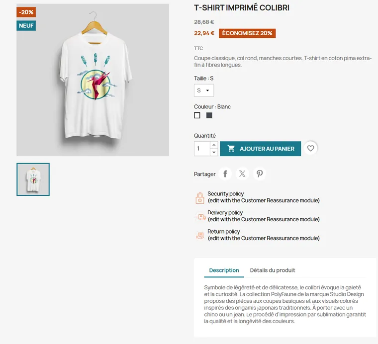
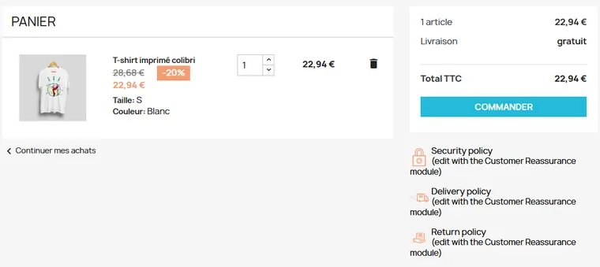
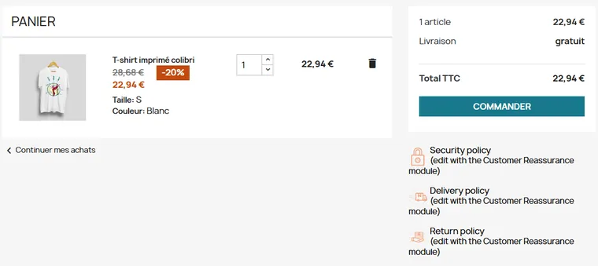
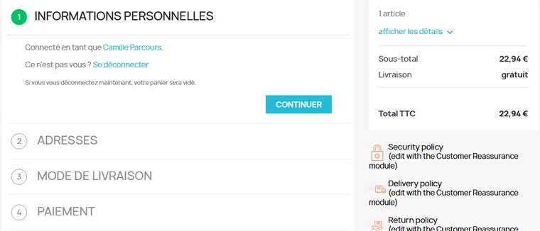
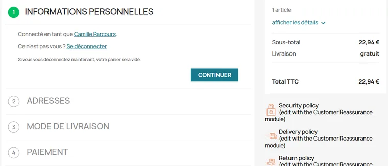

Avant et après : une boutique de test
Pour montrer la méthode, je l’ai appliquée à une boutique de test : PrestaShop 9.2.1 installée sur mon poste, avec son thème d’origine (Classic) et ses produits de démonstration, sans rien de propre à un marchand. Le parcours d’achat a été relevé en 19 étapes, de l’accueil au compte client, puis corrigé dans un thème à part (un thème enfant), sans toucher au thème d’origine.
Une vraie boutique est différente. Son thème, ses modules, ses couleurs et ses textes changent les défauts comme les corrections. Cet exemple montre la méthode ; il ne dit pas ce que donnerait votre boutique.
| Mesure | Avant | Après |
|---|---|---|
| Corrections au relevé automatique | 61 | 1 |
| dont bloquantes | 5 | 0 |
| Constats au clavier | 84 | 0 |
| Achat complet au clavier | 13 sur 14 | 14 sur 14 |
Ces chiffres viennent d’outils : un relevé automatique, qui ne voit qu’une partie des défauts, et un programme qui parcourt la boutique au clavier. « 0 » ne veut pas dire qu’il ne reste rien. Après ces corrections, un essai à la main a encore trouvé un défaut que l’outil ne voyait pas (le retour du focus après l’ajout au panier) ; il a été corrigé depuis. Aucun lecteur d’écran n’a encore été utilisé sur cette boutique.
1. L’accueil : le carrousel
Le carrousel d’images défilait tout seul, sans moyen de l’arrêter. Au clavier, c’était un piège : une fois entré dedans, on n’atteignait plus le reste de la page. Il a maintenant un bouton « Mettre le carrousel en pause », et le clavier le traverse normalement.
Les pastilles « -20 % » et « Neuf », en texte blanc sur orange clair et bleu clair, étaient difficiles à lire : leurs couleurs ont été foncées.


2. La fiche produit
Deux défauts bloquaient l’achat avec un lecteur d’écran. Les boutons « + » et « − » de la quantité n’avaient pas de nom : le lecteur d’écran annonçait « bouton », sans plus. Ils s’appellent maintenant « Augmenter la quantité » et « Diminuer la quantité ». Les onglets « Description » et « Détails du produit » étaient mal construits pour les lecteurs d’écran (deux défauts bloquants et un gênant, de même cause) ; leur structure a été reprise dans le gabarit de la fiche.
Au clavier, le bouton « favori » (le cœur) et les pastilles de couleur ne montraient pas où était le focus : ils ont maintenant un contour visible. À l’écran, ce qui change surtout, ce sont le bouton « Ajouter au panier », le prix et les pastilles de réduction, plus foncés pour être lisibles.


3. Le panier
Les boutons « + » et « − » du panier avaient le même défaut que ceux de la fiche produit, avec la même cause : le script du thème qui les crée. Une seule correction règle les deux pages. Le bouton « Commander », blanc sur bleu clair, était difficile à lire.
Juste avant le panier, quand on ajoute un produit, une fenêtre de confirmation s’ouvre. À sa fermeture, le focus ne revenait pas sur le bouton « Ajouter au panier » : la personne au clavier perdait sa place. Il y revient maintenant.


4. La commande
Les liens placés dans le texte, comme « Se déconnecter », ne se distinguaient que par leur couleur, un bleu clair : ils sont maintenant soulignés, et plus foncés.
Dans les formulaires de la commande et du compte, sept champs avaient un message d’erreur ni relié au champ, ni annoncé. Chaque message est maintenant relié à son champ, et le focus va sur le premier champ en erreur. Neuf champs personnels indiquent aussi au navigateur ce qu’ils attendent, pour le remplissage automatique.


Sur toutes les pages
- Un lien « Aller au contenu » permet de passer le menu au clavier. Il manquait sur 18 étapes.
- Le menu des catégories ne s’ouvrait qu’à la souris : c’était la seule action de l’achat impossible au clavier. Il s’ouvre maintenant au clavier, et annonce s’il est ouvert ou fermé.
- Le focus se voit partout : un contour foncé de 3 pixels, bordé de blanc.
- Trois couleurs de la charte ont été foncées : le gris des textes secondaires, le bleu principal et l’orange des promotions. À elles trois, elles rendaient 579 éléments difficiles à lire.
Ce qui reste
- Une correction n’est pas faite : la bannière de l’accueil est un lien sans texte. Ce texte s’écrit dans le réglage du module, et c’est au marchand de le choisir.
- Plusieurs choix reviennent au marchand : les couleurs de sa marque, les textes ajoutés et leurs traductions, l’aspect du focus, le moment de la mise en ligne. Ils lui sont posés sous forme de questions.
- Dans un panier de plusieurs produits, les boutons « + » et « − » portent le même nom à chaque ligne : c’est à améliorer.
- Aucun lecteur d’écran n’a encore été utilisé sur cette boutique : c’est la prochaine vérification.
Où en est votre boutique ? Demander un premier relevé gratuit